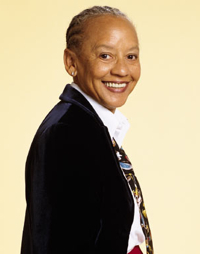

28th Annual Martin Luther King, Jr Memorial Convocation
Please join us

Nikki Giovanni
- February 2, 2012, 7 pm
(doors open at 6:30 pm) - Santa Cruz Civic Auditorium
- The event is free and open to the public.
- Free shuttle from campus: Pick-up will begin at 6pm at the East/Main Entrance and complete the perimeter loop. It will depart from the Civic shortly after the Convocation, roughly 8:30pm, to return to campus.
- The 2012 Martin Luther King Jr. Memorial Convocation will feature Nikki Giovanni, world-renowned poet, writer, commentator, activist, and University Distinguished Professor at Virginia Tech. One of the most widely read American poets, Giovanni prides herself on being "a Black American, a daughter, a mother, a professor of English." Giovanni remains as determined and committed as ever to the fight for civil rights and equality. Please join us for her talk, “The Privilege of Serving: Art and the Legacy of Martin Luther King Jr.”
Sponsored by the